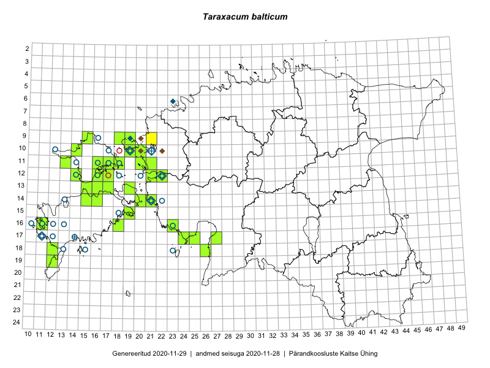

Taraxacum balticum
Uuendatud: 2016-12-07
Kaardile koondatud taksonid: Taraxacum balticum Dahlst.

Kaart põhineb 12 kirjel, neist vaatlusi 9 ja eksemplare 3. Taksonit on leitud 9 ruudust.
| Ruut | Vaatleja(d) | Vaatlusaeg | Kirje tüüp | Viide andmebaasikirjele |
|---|---|---|---|---|
| 12-21 | Tiit Hallikma, Toomas Kukk | 2015-08-27 | ruut/ala | vaata PlutoFis |
| 17-25 | Ott Luuk, Eerik Leibak | 2015-05-21 | ruut/ala | vaata PlutoFis |
| 17-24 | Ott Luuk, Eerik Leibak | 2015-05-21 | ruut/ala | vaata PlutoFis |
| 17-24 | Ott Luuk, Eerik Leibak | 2015-05-21 | punkt | vaata PlutoFis |
| 17-25 | Ott Luuk, Eerik Leibak | 2015-05-21 | punkt | vaata PlutoFis |
| 19-12 | Ott Luuk, Mari Reitalu, Thea Kull | 2014-05-23 | ruut/ala | vaata PlutoFis |
| 11-18 | Toomas Kukk, Peedu Saar | 2016-05-06 | ruut/ala | vaata PlutoFis |
| 08-24 | Sirje Lagle, Tõnu Ploompuu | 2015-08-18 | ruut/ala | vaata PlutoFis |
| 09-21 | Sirje Lagle, Tõnu Ploompuu | 2015-05-16 | ruut/ala | vaata PlutoFis |
| 10-20 | Ott Luuk | 2014-05-24 | eksemplar | vaata PlutoFis |
| 19-12 | Ott Luuk | 2014-05-23 | eksemplar | vaata PlutoFis |
| 16-11 | Ott Luuk | 2014-05-23 | eksemplar | vaata PlutoFis |